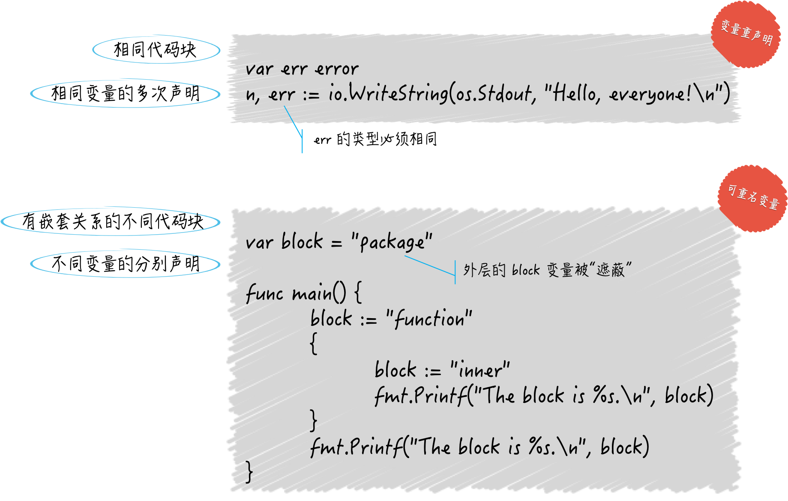

- 00 导读 写给0基础入门的Go语言学习者.md.html
- 00 导读 学习专栏的正确姿势.md.html
- 00 开篇词 跟着学，你也能成为Go语言高手.md.html
- 01 工作区和GOPATH.md.html
- 02 命令源码文件.md.html
- 03 库源码文件.md.html
- 04 程序实体的那些事儿（上）.md.html
- 05 程序实体的那些事儿（中）.md.html
- 06 程序实体的那些事儿 （下）.md.html
- 07 数组和切片.md.html
- 08 container包中的那些容器.md.html
- 09 字典的操作和约束.md.html
- 10 通道的基本操作.md.html
- 11 通道的高级玩法.md.html
- 12 使用函数的正确姿势.md.html
- 13 结构体及其方法的使用法门.md.html
- 14 接口类型的合理运用.md.html
- 15 关于指针的有限操作.md.html
- 16 go语句及其执行规则（上）.md.html
- 17 go语句及其执行规则（下）.md.html
- 18 if语句、for语句和switch语句.md.html
- 19 错误处理（上）.md.html
- 20 错误处理 （下）.md.html
- 21 panic函数、recover函数以及defer语句 （上）.md.html
- 22 panic函数、recover函数以及defer语句（下）.md.html
- 23 测试的基本规则和流程 （上）.md.html
- 24 测试的基本规则和流程（下）.md.html
- 25 更多的测试手法.md.html
- 26 sync.Mutex与sync.RWMutex.md.html
- 27 条件变量sync.Cond （上）.md.html
- 28 条件变量sync.Cond （下）.md.html
- 29 原子操作（上）.md.html
- 30 原子操作（下）.md.html
- 31 sync.WaitGroup和sync.Once.md.html
- 32 context.Context类型.md.html
- 33 临时对象池sync.Pool.md.html
- 34 并发安全字典sync.Map （上）.md.html
- 35 并发安全字典sync.Map (下).md.html
- 36 unicode与字符编码.md.html
- 37 strings包与字符串操作.md.html
- 38 bytes包与字节串操作（上）.md.html
- 39 bytes包与字节串操作（下）.md.html
- 40 io包中的接口和工具 （上）.md.html
- 41 io包中的接口和工具 （下）.md.html
- 42 bufio包中的数据类型 （上）.md.html
- 43 bufio包中的数据类型（下）.md.html
- 44 使用os包中的API （上）.md.html
- 45 使用os包中的API （下）.md.html
- 46 访问网络服务.md.html
- 47 基于HTTP协议的网络服务.md.html
- 48 程序性能分析基础（上）.md.html
- 49 程序性能分析基础（下）.md.html
- 尾声 愿你披荆斩棘，所向无敌.md.html
- 新年彩蛋 完整版思考题答案.md.html
- 捐赠
05 程序实体的那些事儿（中）
在前文中，我解释过代码块的含义。Go语言的代码块是一层套一层的，就像大圆套小圆。
一个代码块可以有若干个子代码块；但对于每个代码块，最多只会有一个直接包含它的代码块（后者可以简称为前者的外层代码块）。
这种代码块的划分，也间接地决定了程序实体的作用域。我们今天就来看看它们之间的关系。
我先说说作用域是什么？大家都知道，一个程序实体被创造出来，是为了让别的代码引用的。那么，哪里的代码可以引用它呢，这就涉及了它的作用域。
我在前面说过，程序实体的访问权限有三种：包级私有的、模块级私有的和公开的。这其实就是Go语言在语言层面，依据代码块对程序实体作用域进行的定义。
包级私有和模块级私有访问权限对应的都是代码包代码块，公开的访问权限对应的是全域代码块。然而，这个颗粒度是比较粗的，我们往往需要利用代码块再细化程序实体的作用域。
比如，我在一个函数中声明了一个变量，那么在通常情况下，这个变量是无法被这个函数以外的代码引用的。这里的函数就是一个代码块，而变量的作用域被限制在了该代码块中。当然了，还有例外的情况，这部分内容，我留到讲函数的时候再说。
总之，请记住，一个程序实体的作用域总是会被限制在某个代码块中，而这个作用域最大的用处，就是对程序实体的访问权限的控制。对“高内聚，低耦合”这种程序设计思想的实践，恰恰可以从这里开始。
你应该可以通过下面的问题进一步感受代码块和作用域的魅力。
今天的问题是：如果一个变量与其外层代码块中的变量重名会出现什么状况？
我把此题的代码存到了demo10.go文件中了。你可以在“Golang_Puzzlers”项目的puzzlers/article5/q1包中找到它。
package main
import "fmt"
var block = "package"
func main() {
block := "function"
{
block := "inner"
fmt.Printf("The block is %s.\n", block)
}
fmt.Printf("The block is %s.\n", block)
}
这个命令源码文件中有四个代码块，它们是：全域代码块、main包代表的代码块、main函数代表的代码块，以及在main函数中的一个用花括号包起来的代码块。
我在后三个代码块中分别声明了一个名为block的变量，并分别把字符串值"package"、"function"和"inner"赋给了它们。此外，我在后两个代码块的最后分别尝试用fmt.Printf函数打印出“The block is %s.”。这里的“%s”只是为了占位，程序会用block变量的实际值替换掉。
具体的问题是：该源码文件中的代码能通过编译吗？如果不能，原因是什么？如果能，运行它后会打印出什么内容？
典型回答
能通过编译。运行后打印出的内容是：
The block is inner.
The block is function.
问题解析
初看这道题，你可能会认为它无法通过编译，因为三处代码都声明了相同名称的变量。的确，声明重名的变量是无法通过编译的，用短变量声明对已有变量进行重声明除外，但这只是对于同一个代码块而言的。
对于不同的代码块来说，其中的变量重名没什么大不了，照样可以通过编译。即使这些代码块有直接的嵌套关系也是如此，就像demo10.go中的main包代码块、main函数代码块和那个最内层的代码块那样。
这样规定显然很方便也很合理，否则我们会每天为了选择变量名而烦恼。但是这会导致另外一个问题，我引用变量时到底用的是哪一个？这也是这道题的第二个考点。
这其实有一个很有画面感的查找过程。这个查找过程不只针对于变量，还适用于任何程序实体。如下面所示。
- 首先，代码引用变量的时候总会最优先查找当前代码块中的那个变量。注意，这里的“当前代码块”仅仅是引用变量的代码所在的那个代码块，并不包含任何子代码块。
- 其次，如果当前代码块中没有声明以此为名的变量，那么程序会沿着代码块的嵌套关系，从直接包含当前代码块的那个代码块开始，一层一层地查找。
- 一般情况下，程序会一直查到当前代码包代表的代码块。如果仍然找不到，那么Go语言的编译器就会报错了。
还记得吗？如果我们在当前源码文件中导入了其他代码包，那么引用其中的程序实体时，是需要以限定符为前缀的。所以程序在找代表变量未加限定符的名字（即标识符）的时候，是不会去被导入的代码包中查找的。
但有个特殊情况，如果我们把代码包导入语句写成
import . "XXX"的形式（注意中间的那个“.”），那么就会让这个“XXX”包中公开的程序实体，被当前源码文件中的代码，视为当前代码包中的程序实体。比如，如果有代码包导入语句
import . fmt，那么我们在当前源码文件中引用fmt.Printf函数的时候直接用Printf就可以了。在这个特殊情况下，程序在查找当前源码文件后会先去查用这种方式导入的那些代码包。
好了，当你明白了上述过程之后，再去看demo10.go中的代码。是不是感觉清晰了很多？
从作用域的角度也可以说，虽然通过var block = "package"声明的变量作用域是整个main代码包，但是在main函数中，它却被那两个同名的变量“屏蔽”了。
相似的，虽然main函数首先声明的block的作用域，是整个main函数，但是在最内层的那个代码块中，它却是不可能被引用到的。反过来讲，最内层代码块中的block也不可能被该块之外的代码引用到，这也是打印内容的第二行是“The block is function.”的另一半原因。
你现在应该知道了，这道题看似简单，但是它考察以及可延展的范围并不窄。
知识扩展
不同代码块中的重名变量与变量重声明中的变量区别到底在哪儿？
为了方便描述，我就把不同代码块中的重名变量叫做“可重名变量”吧。注意，在同一个代码块中不允许出现重名的变量，这违背了Go语言的语法。关于这两者的表象和机理，我们已经讨论得足够充分了。你现在可以说出几条区别？请想一想，然后再看下面的列表。
- 变量重声明中的变量一定是在某一个代码块内的。注意，这里的“某一个代码块内”并不包含它的任何子代码块，否则就变成了“多个代码块之间”。而可重名变量指的正是在多个代码块之间由相同的标识符代表的变量。
- 变量重声明是对同一个变量的多次声明，这里的变量只有一个。而可重名变量中涉及的变量肯定是有多个的。
- 不论对变量重声明多少次，其类型必须始终一致，具体遵从它第一次被声明时给定的类型。而可重名变量之间不存在类似的限制，它们的类型可以是任意的。
- 如果可重名变量所在的代码块之间，存在直接或间接的嵌套关系，那么它们之间一定会存在“屏蔽”的现象。但是这种现象绝对不会在变量重声明的场景下出现。

当然了，我们之前谈论过，对变量进行重声明还有一些前提条件，不过在这里并不是重点。我就不再赘述了。
以上4大区别中的第3条需要你再注意一下。既然可重名变量的类型可以是任意的，那么当它们之间存在“屏蔽”时你就更需要注意了。
不同类型的值大都有着不同的特性和用法。当你在某一种类型的值上施加只有在其他类型值上才能做的操作时，Go语言编译器一定会告诉你：“这不可以”。
这种情况很好，甚至值得庆幸，因为你的程序存在的问题被提前发现了。如若不然，程序没准儿会在运行过程中由此引发很隐晦的问题，让你摸不着头脑。
相比之下，那时候排查问题的成本可就太高了。所以，我们应该尽量利用Go语言的语法、规范和命令来约束我们的程序。
具体到不同类型的可重名变量的问题上，让我们先来看一下puzzlers/article5/q2包中的源码文件demo11.go。它是一个很典型的例子。
package main
import "fmt"
var container = []string{"zero", "one", "two"}
func main() {
container := map[int]string{0: "zero", 1: "one", 2: "two"}
fmt.Printf("The element is %q.\n", container[1])
}
在demo11.go中，有两个都叫做container的变量，分别位于main包代码块和main函数代码块。main包代码块中的变量是切片（slice）类型的，另一个是字典（map）类型的。在main函数的最后，我试图打印出container变量的值中索引为1的那个元素。
如果你熟悉这两个类型肯定会知道，在它们的值上我们都可以施加索引表达式，比如container[0]。只要中括号里的整数在有效范围之内（这里是[0, 2]），它就可以把值中的某一个元素取出来。
如果container的类型不是数组、切片或字典类型，那么索引表达式就会引发编译错误。这正是利用Go语言语法，帮我们约束程序的一个例子；但是当我们想知道container确切类型的时候，利用索引表达式的方式就不够了。
当可重名变量的值被转换成某个接口类型值，或者它们的类型本身就是接口类型的时候，严格的类型检查就很有必要了。至于怎么检查，我们在下篇文章中再讨论。
总结
我们先讨论了代码块，并且也谈到了它与程序实体的作用域，以及访问权限控制之间的巧妙关系。Go语言本身对程序实体提供了相对粗粒度的访问控制。但我们自己可以利用代码块和作用域精细化控制它们。
如果在具有嵌套关系的不同代码块中存在重名的变量，那么我们应该特别小心，它们之间可能会发生“屏蔽”的现象。这样你在不同代码块中引用到变量很可能是不同的。具体的鉴别方式需要参考Go语言查找（代表了程序实体的）标识符的过程。
另外，请记住变量重声明与可重名变量之间的区别以及它们的重要特征。其中最容易产生隐晦问题的一点是，可重名变量可以各有各的类型。这时候我们往往应该在真正使用它们之前先对其类型进行检查。利用Go语言的语法、规范和命令做辅助的检查是很好的办法，但有些时候并不充分。
思考题
我们在讨论Go语言查找标识符时的范围的时候，提到过import . XXX这种导入代码包的方式。这里有个思考题：
如果通过这种方式导入的代码包中的变量与当前代码包中的变量重名了，那么Go语言是会把它们当做“可重名变量”看待还是会报错呢？
其实我们写个例子一试便知，但重点是为什么？请你尝试从代码块和作用域的角度解释试验得到的答案。
© 2019 - 2023 Liangliang Lee. Powered by gin and hexo-theme-book.